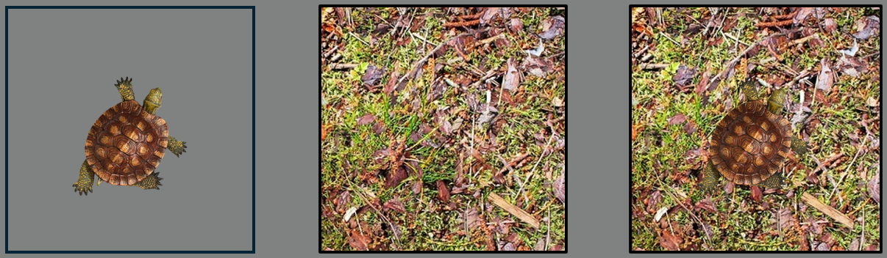

<!doctype html>
<html>
<head>
    <title>My experiment</title>
    <script src="jspsych-6.1.0/jspsych.js"></script>
    <script src="jspsych-6.1.0/plugins/jspsych-fullscreen.js"></script>
    <script src="jspsych-6.1.0/plugins/jspsych-html-keyboard-response.js"></script>
    <script src="jspsych-6.1.0/plugins/jspsych-html-slider-response.js"></script>
    <script src="jspsych-6.1.0/plugins/jspsych-image-keyboard-response.js"></script>
    <script src="jspsych-6.1.0/plugins/jspsych-call-function.js"></script>
    <script src="jspsych-6.1.0/plugins/jspsych-survey-likert.js"></script>
    <script src="jspsych-6.1.0/plugins/jspsych-survey-text.js"></script>
    <script src="jspsych-6.1.0/plugins/jspsych-animation.js"></script>
    <script src="jspsych-6.1.0/plugins/jspsych-external-html.js"></script>
    <script src="jatos.js"></script>

    <link href="jspsych-6.1.0/css/jspsych.css" rel="stylesheet" type="text/css"></link>
    <link href="style.css" rel="stylesheet" type="text/css" />
    <style>
    html, body {
      height: 100%;
      margin: 0;
      padding: 0;
      overflow: hidden;
    }
    </style>
</head>
  <body></body>
  <script>

      /* INITIALIZE SOME VARIABLES */
      const num_steps = 20;
      const stim_dur = 2000; /* milliseconds */
      const fix_dur = 200;

      const practice_reps = 2;    /* x 3 trials - loop this until at least 75% correct  */
      const practice_confidence = 2; /* x 3 trials */

      const num_ima_trials = 10; /*10 */
      const num_ima_reps = 1; /* how often to repeat the 2 orientations */

      const threshold_level = 70; /* the value to staircase to */
      const lower_bound = 65; /* lower than this - increase isibility */
      const upper_bound = 75; /* higher than this - decrease visibility */
      const num_trials_stair_block = 10; /* 10 evaluate acc after this many trials */
      const num_stair_reps = 6; /* 12 number of staircase reps - two blocks - one per tilt */
      const num_objects = 2 /* 2 - inanimated and animated objects */

      const num_trials_main  = 24; /* 24 needs to be dividable by 2 */
      const num_blocks = 12; /* 12 - 2 x (2 (left/right) x 3(no-ima,left-ima,right-ima) )

      /* Define two sets of stimuli */
      const stimulusSets = 1; /* Math.floor(Math.random() * 2) + 1; */ /* 2 - number of sets. set contain 2 environments and 2 objects */


      /* RESPONSE MAPPING */
      r_idx = jsPsych.randomization.sampleWithReplacement([0, 1], 1);
      if (r_idx == 0) {
          responses = ['A', 'D']; /* yes - no*/
          response_prompt = 'Yes [' + responses[0] + '] or no [' + responses[1] + ']';
      } else if (r_idx == 1) {
          responses = ['D', 'A'];
          response_prompt = 'No [' + responses[1] + '] or yes [' + responses[0] + ']';
      };


      /* GLOBAL VARIABLES */
      window.start_vis_level = 46;
      window.vis_level = window.start_vis_level; /* initial value for psychophysics */
      window.visibility_levels = []; /*visibility levels after psychophysics for both objects  */
      window.trl_num = 0;
      window.stair_num = 0;
      window.block_num = 0;

      /* IMAGE SEQUENCE FUNCTIONS */
      function makeStimSequence(startValue, stopValue, cardinality, stim, set) {
          var arr = [];
          if (stim > 0) {
              var step = (stopValue - startValue) / (cardinality - 1);
              for (var i = 0; i < cardinality; i++) {
                  var vis = Math.round(startValue + (step * i));
                  arr.push("img/set_" + set.toString() + "_obj_" + stim.toString() + "_vis_" + vis.toString() + ".png");
              }
          } else if (stim == 0) {
              ranNoiseOrder = jsPsych.randomization.repeat([1, 2, 3, 4, 5, 6, 7, 8, 9, 10, 11, 12, 13, 14, 15, 16, 17, 18, 19, 20], 1);
              for (var i = 0; i < cardinality; i++) {
                  var random_number = ranNoiseOrder[i];
                  arr.push("img/set_" + set.toString() + "_noise_" + random_number.toString() + ".png");
              }
          }
          return arr;
      };

      /* SOME ESSENTIAL VARS*/
      /* fixation */
      var fixation = {
          type: 'html-keyboard-response',
          stimulus: '<div style="font-size:60px;">+</div>',
          choices: jsPsych.NO_KEYS,
          trial_duration: fix_dur,
          data: { test_part: 'fixation' }
      };

      /* update trial number */
      var update_trial_number = {
          type: "call-function",
          func: function () {
              window.trl_num++;
          }
      };

      /* CREATE TIMELINE */
      var timeline = [];

      /* INFORMATION SHEET */
      var information_sheet = {
          type: "external-html",
          url: "InformationSheet_Web_1260_003_Nov2018.html",
          cont_btn: "Continue"
      };
      timeline.push(information_sheet);

      /* CONSENT FORM */
      var information_sheet = {
          type: "external-html",
          url: "ConsentForm_Web_1260_003_May2018.html",
          cont_btn: "Start",
          check_fn: function (elem) {
              if (document.getElementById('consent_checkbox').checked) {
                  return true;
              }
              else {
                  alert("If you wish to participate, you must check the box next to the statement 'I understand all the above and confirm that I wish to continue.'");
                  return false;
              }
              return false;
          }
      };
      timeline.push(information_sheet);

      // Log Prolific ID
      var prolific_ID = {
          type: 'survey-text',
          questions: [
              { prompt: "Please enter your Prolific ID in the field below.", rows: 2, columns: 40 }
          ]
      };
      timeline.push(prolific_ID);

      /* WELCOME MESSAGE */
      var welcome = {
          type: "html-keyboard-response",
          stimulus: "Welcome to the experiment. Please turn off your sound. <br> <br> Press any key to begin."
      };
      timeline.push(welcome);

      timeline.push({
          type: 'fullscreen',
          fullscreen_mode: true
      });

      /* QUESTIONNAIRES*/
      var questionnaire_instr = {
          type: "html-keyboard-response",
          stimulus: "Before we begin with the main task, <br> we'd like to ask you to fill out a short quationnaire. <br>" +
              "Please take your time to answer the questions truthfully. <br> <br> " +
              "Press [space] to continue ",
          choices: ['space']
      };

      var VVIQ_instr = {
          type: "html-keyboard-response",
          stimulus: "For each item on this questionnaire, try to form a visual image, " +
              "and consider your experience carefully. <br> For any image that you do experience, " +
              "rate how vivid it is using the five-point scale described next. <br>" +
              "If you do not have a visual image, rate vividness as ‘1’.  <br>" +
              "Only use ‘5’ for images that are truly as lively and vivid as real seeing. <br>" +
              "Please note that there are no right or wrong answers to the questions, <br>" +
              "and that it is not necessarily desirable to experience imagery or,  <br> " +
              "if you do, to have more vivid imagery. <br><br>" +
              "Press [space] to start the questionnaire ",
          choices: ['space']
      };

      var scale_VVIQ = [
          "No image at all, you only “know” that you are thinking of the object",
          "Vague and dim",
          "Moderately clear and lively",
          "Clear and reasonably vivid",
          "Perfectly clear and as vivid as real seeing"
      ];

      var vviq_3 = {
          type: "survey-likert",
          preamble: "Think of the front of a shop which you often go to.  Consider the picture that comes before your mind’s eye.",
          questions: [
              { prompt: "The overall appearance of the shop from the opposite side of the road", labels: scale_VVIQ, required: true },
              { prompt: "A window display including colours, shapes and details of individual items for sale", labels: scale_VVIQ, required: true },
              { prompt: "You are near the entrance. The colour, shape and details of the door", labels: scale_VVIQ, required: true },
              { prompt: "You enter the shop and go to the counter. The counter assistant serves you. Money changes hands", labels: scale_VVIQ, required: true },
          ]
      };

      timeline.push(questionnaire_instr, VVIQ_instr, vviq_3);

      /* TASK EXPLANATION */
      var explain_task = {
          type: "html-keyboard-response",
          on_start: function () {
              jsPsych.pluginAPI.preloadImages(["img/example.PNG"])
          },
          stimulus: "Thank you! <br> During the rest of this experiment you will be looking for <strong> objects </strong> in <strong>scenes</strong> (see below) <br>" +
              "<strong>An object</strong> can be either a living thing or a non-living item <strong>(see</strong> <strong>left)</strong> - we will tell you which object to focus on in each scene. <br> " +
              "<strong>A scene</strong> is the surrounding environment where the object is located <strong>(see</strong> <strong>middle)</strong>. <br>" +
              "On every trial, your task it to decide whether the object was present in the scene or not <strong>(see</strong> <strong>right)</strong>.<br><br>" +
              "</img>" +
              "<br><br> Press [space] to continue ",
          choices: ['space']
      }; /*  width=600 */
      timeline.push(explain_task);

      /* PRACTICE TRIALS */

      var practice_instruction = {
          type: "html-keyboard-response",
          on_start: function () {
              // Dynamically select the example image based on the chosen set
              var exampleImage = "img/set_" + stimulusSets + "_example.png";
              jsPsych.pluginAPI.preloadImages([exampleImage]);
          },
          stimulus: function () {
              return "We will first start with a few practice trials <br>" +
                  "Each time, <strong>one</strong> of two object will gradually appear in a noisy environment <br>" +
                  "See the examples for the objects below:<br><br>" +
                  " <br>" +
                  "Afterwards, if you saw an object press [" + responses[0] + "] <br> " +
                  "If you did not see a grating press [" + responses[1] + "] <br>" +
                  "Please use your left hand to make your response (you will need your right hand later) <br>" +
                  "Always keep your eyes fixated on the cross in the middle. <br>" +
                  "<br> Press [space] to start the practice trials";
          },
          choices: ['space']
      };
      timeline.push(practice_instruction);

      var show_dynamic_stimulus = {
          type: 'animation',
          stimuli: jsPsych.timelineVariable('stimulus'),
          choices: jsPsych.NO_KEYS,
          on_start: function () {
              jsPsych.pluginAPI.preloadImages(jsPsych.timelineVariable('stimulus', true))
          },
          frame_isi: 0,
          frame_time: Math.round(stim_dur / num_steps),
          on_load: function () {
              // Apply custom styling immediately after loading the stimulus
              const images = document.querySelectorAll('img');
              images.forEach(img => {
                  if (img.src.includes('set_') && !img.src.includes('example')) {
                      // Apply styling only to relevant images
                      img.style.position = 'absolute'; // Keeps image in place
                      img.style.top = '50%';
                      img.style.left = '50%';
                      img.style.transform = 'translate(-50%, -50%)'; // Centers the image
                      img.style.maxWidth = '100vw'; // Limits to viewport width
                      img.style.maxHeight = '100vh'; // Limits to viewport height
                      img.style.width = 'auto'; // Keeps aspect ratio
                      img.style.height = 'auto'; // Keeps aspect ratio
                      img.style.margin = '0';
                      img.style.padding = '0';
                      img.style.border = 'none';
                      img.style.overflow = 'hidden';
                  }
              });

              // Prevent page scrollbars immediately after the image is loaded
              document.body.style.overflow = 'hidden'; // Prevent scrollbars
          }
      };

      var response_screen = {
          type: 'html-keyboard-response',
          stimulus: 'Was there an object on the screen?',
          choices: responses,
          prompt: response_prompt,
          data: jsPsych.timelineVariable('data'),
          on_finish: function (data) {
              data.correct = data.key_press == jsPsych.pluginAPI.convertKeyCharacterToKeyCode(data.correct_response);
          },
      };


      /* combine into trial procedure */
      var detection_practice_procedure = {
          timeline: [fixation, show_dynamic_stimulus, response_screen],
          timeline_variables: [
              {
                  stimulus: makeStimSequence(1, window.vis_level, num_steps, 1, stimulusSets),
                  data: { test_part: 'det_practice', correct_response: responses[0] }
              },
              {
                  stimulus: makeStimSequence(1, window.vis_level, num_steps, 2, stimulusSets),
                  data: { test_part: 'det_practice', correct_response: responses[0] }
              },
              {
                  stimulus: makeStimSequence(1, window.vis_level, num_steps, 0, stimulusSets),
                  data: { test_part: 'det_practice', correct_response: responses[1] }
              }
          ],
          sample: {
              type: 'fixed-repetitions',
              size: practice_reps,
          }
      };

      var detection_feedback = {
          type: 'html-keyboard-response',
          choices: ['space'],
          stimulus: function () {
              var trials = jsPsych.data.get().last(practice_reps * 3 * 3).filter({ test_part: 'det_practice' });
              var num_correct = trials.filter({ correct: true }).count();
              var accuracy = Math.round(num_correct / trials.count() * 100);

              if (accuracy > 74) {
                  return "Excellent, you responded correctly on " + num_correct +
                      " out of " + trials.count() + " trials. <br>" +
                      "<br> Press [space] to continue "
              } else {
                  return "This time, you responded correctly on " + num_correct +
                      " out of " + trials.count() + " trials. <br>" +
                      "Let's do a few more practice trials <br> " +
                      "<br> Press [space] to continue "
              }
          }
      };

      var detection_practice_loop_node = {
          timeline: [detection_practice_procedure, detection_feedback],
          loop_function: function (data) {
              var trials = jsPsych.data.get().last(practice_reps * 3 * 3).filter({ test_part: 'det_practice' });
              var num_correct = trials.filter({ correct: true }).count();
              var accuracy = Math.round(num_correct / trials.count() * 100);

              if (accuracy > 74) {
                  return false;
              } else {
                  window.vis_level++; /* make it a bit easier then */
                  
                  return true;
              } 
          }
      };
      timeline.push(detection_practice_loop_node); 
   
      /* PRACTICE IMAGERY */
      var instr_imagery = {
          type: "html-keyboard-response",
          stimulus: "Another part of the experiment is that we will sometimes ask you <br> " +
              "to also imagine an object while you are looking at the noisy environment. <br> " +
              "You will always be asked to imagine the same object for a few trials in a row. <br>" +
              "Again, always keep your eyes fixated on the cross in the middle. <br>" +
              "We will now practice this. <br>" +
              "<br> Press [space] to continue",
          choices: ['space']
      }
      timeline.push(instr_imagery);

      window.order_ima = jsPsych.randomization.repeat([0, 1], num_ima_reps);
      window.ima_block = 0;

      for (var block = 0; block < (num_ima_reps * 2); block++) {

          var start_ima_block = {
              type: "html-keyboard-response",
              stimulus: function () {

                  if (window.order_ima[window.ima_block] == 0) {
                      var stim_instr = " a pillow ";
                      var stim_pic = "img/set_" + stimulusSets + "_obj_1_example.png";
                  } else if (window.order_ima[window.ima_block] == 1) {
                      var stim_instr = " a mouse ";
                      var stim_pic = "img/set_" + stimulusSets + "_obj_2_example.png";
                  };

                  jsPsych.pluginAPI.preloadImages([stim_pic])

                  window.ima_block++

                  return "For the next few trials, please imagine the object below: <br> " +
                      " <br>" +
                      "Imagine the object as vividly as possible, as if it was actually presented on the screen. <br> " +
                      "Please keep your eyes open and look at the noisy environment while imagining. <br>" +
                      "After each trial, you will be asked to rate the vividness of your imagery <br> " +
                      "on a scale from 1 (not vivid at all) to 5 (perfectly clear and as vivid as real seeing). <br><br>" +
                      "<br> <br> Press [space] to continue "
              },
              choices: ['space']
          };

          var show_dynamic_noise = {
              type: 'animation',
              stimuli: function () {
                  arr = makeStimSequence(1, window.vis_level, num_steps, 0, stimulusSets);
                  jsPsych.pluginAPI.preloadImages(arr)
                  return arr
              },
              choices: jsPsych.NO_KEYS,
              frame_isi: 0,
              frame_time: Math.round(stim_dur / num_steps)
          };

          var ima_response = {
              type: "html-keyboard-response",
              choices: ['0', '1', '2', '3', '4', '5'],
              stimulus: 'How vivid was your mental image?',
              prompt: 'Not vivid at all [1] - As vivid as real seeing [5]',
              data: { test_part: 'ima_practice' }
          };

          var ima_procedure = {
              timeline: [fixation, show_dynamic_noise, ima_response],
              repetitions: num_ima_trials
          };

          timeline.push(start_ima_block, ima_procedure);
      };

      

      /* STAIRCASE DETECTION */
      var stair_instruction = {
          type: "html-keyboard-response",
          stimulus: "We will now do a calibration block. <br>" +
              "During this part, you again have to indicate whether you saw an object. <br>" +
              "You do not have to imagine the object for this part. <br>" +
              "Over time, it will become harder and harder to see the object. <br>" +
              "Do not worry if you become unsure about whether you saw something or not, that is supposed to happen. <br> " +
              "Just give your best guess on each trial. <br>" +
              "The calibration will take about 5 minutes <br>" +
              "<br> Press [space] to continue ",
          choices: ['space']
      };
      timeline.push(stair_instruction);

      var response = [responses[1], responses[0], responses[0]];

      window.stairblock_order = jsPsych.randomization.repeat([0, 1], 1);
      window.stair_block = 0; // Define the order for the current object

      for (var obj = 0; obj < num_objects; obj++) {

          var stairblock_instruction = {
              type: "html-keyboard-response",
              stimulus: function () {
                  if (window.stairblock_order[window.stair_block] == 0) { /* first object (inanimate) */
                      window.trial_order = jsPsych.randomization.repeat([0, 1], num_trials_stair_block / 2);
                      return "You will be looking for the object below: <br>" +
                          " <br>" +
                          "<br> Press [space] to start "
                  }
                  else if (window.stairblock_order[window.stair_block] == 1) { /* second object (animate) */
                      window.trial_order = jsPsych.randomization.repeat([0, 2], num_trials_stair_block / 2);
                      return "You will be looking for the object below: <br>" +
                          " <br>" +
                          "<br> Press [space] to start "
                  }
              },
              choices: ['space'],
              on_finish: function () {
                  window.vis_level = window.start_vis_level;
                  window.stair_num = 0;
                  console.log(window.trial_order)
                  console.log("Current stair_block:", window.stair_block);

              }
          };
          timeline.push(stairblock_instruction)


          for (var stair = 0; stair < num_stair_reps; stair++) {
              for (var trl = 0; trl < num_trials_stair_block; trl++) {

                  var show_dynamic_stimulus = {
                      type: 'animation',
                      stimuli: function () {
                          window.stim_id = window.trial_order[window.trl_num];
                          arr = makeStimSequence(1, window.vis_level, num_steps, window.stim_id, stimulusSets);
                          jsPsych.pluginAPI.preloadImages(arr)
                          return arr
                      },
                      choices: jsPsych.NO_KEYS,
                      frame_isi: 0,
                      frame_time: Math.round(stim_dur / num_steps),
                      on_finish: function () {
                          console.log(window.trl_num)
                      }
                  };

                  var response_screen = {
                      type: "html-keyboard-response",
                      choices: responses,
                      stimulus: 'Was there an object on the screen?',
                      prompt: response_prompt,
                      data: function () {
                          window.stim_id = window.trial_order[window.trl_num];
                          return { test_part: 'stair_test', correct_response: response[window.stim_id] }
                      },
                      on_finish: function (data) {
                          data.correct = data.key_press == jsPsych.pluginAPI.convertKeyCharacterToKeyCode(data.correct_response);
                      }
                  };

                  timeline.push(fixation, show_dynamic_stimulus, response_screen, update_trial_number);
              }

              var stair_update = {
                  type: "call-function",
                  func: function () {
                      var trials = jsPsych.data.get().last(num_trials_stair_block * 4).filter({ test_part: 'stair_test' });/* count timeline events */
                      var num_correct = trials.filter({ correct: true }).count();
                      var accuracy = Math.round(num_correct / trials.count() * 100);
                      var prev_vis_level = window.vis_level;

                      if (accuracy > upper_bound) {
                          window.vis_level = prev_vis_level - Math.round((accuracy - threshold_level) / 10);
                      }
                      else if (accuracy < lower_bound) {
                          window.vis_level = prev_vis_level + Math.round((threshold_level - accuracy) / 10);
                      }

                      if (window.vis_level > 80) { window.vis_level = 80 }

                      return window.vis_level
                  },
                  data: function () {
                      var trials = jsPsych.data.get().last(num_trials_stair_block * 4).filter({ test_part: 'stair_test' });/* count timeline events */
                      var num_correct = trials.filter({ correct: true }).count();
                      var accuracy = Math.round(num_correct / trials.count() * 100);

                      return { test_part: 'stair_update', acc: accuracy, new_vis_level: window.vis_level }
                  },
                  on_finish: function () {
                      console.log(window.vis_level)
                  }
              };

              /* update stair number */
              var update_stair_number = {
                  type: "call-function",
                  func: function () {
                      window.stair_num++;
                      window.trl_num = 0;
                      if (window.stairblock_order[window.stair_block] == 0) { /* first object (inanimate) */
                          window.trial_order = jsPsych.randomization.repeat([0, 1], num_trials_stair_block / 2);
                      }
                      else if (window.stairblock_order[window.stair_block] == 1) { /* second object (animate) */
                          window.trial_order = jsPsych.randomization.repeat([0, 2], num_trials_stair_block / 2);
                      }
                      if (window.stair_num >= num_stair_reps) {
                          // Save visibility level for the current object after all staircase reps
                          if (window.stairblock_order[window.stair_block] == 0) {
                              window.visibility_levels[0] = window.vis_level;
                          }
                          else if (window.stairblock_order[window.stair_block] == 1) {
                              window.visibility_levels[1] = window.vis_level;
                          }
                          // Log the saved visibility level
                          console.log(`Final visibility level for object ${window.stairblock_order[window.stair_block]}:`, window.vis_level);
                          window.stair_block++
                          if (obj == num_objects) {
                              // Output the final visibility levels for both objects
                              console.log("Final visibility levels:", visibility_levels);
                          }
                      }
                  }
              };
              timeline.push(stair_update, update_stair_number);
          };


      };


      /* CONFIDENCE PRACTICE */
      var confidence_instruction1 = {
          type: "html-keyboard-response",
          stimulus: "Well done! <br><br> The final part of the experiment is indicating the confidence in your response. <br>" +
              "In the main task, immediately after you indicated that you did or did not see a stimulus, <br>" +
              "you will be asked how confident you are that you answered correctly. <br> <br>" +
              "<br> Press [space] to continue",
          choices: ['space']
      };
      timeline.push(confidence_instruction1);

      var confidence_instruction2 = {
          type: "html-keyboard-response",
          stimulus: "The lowest end of the scale reflects that you are very uncertain about your answer; <br>" +
              "it feels like a complete guess. The highest end of the scale reflects that you <br>" +
              "are absolutely certain that your answer was correct. <br><br>" +
              "You will indicate your confidence by dragging a slider with your mouse. <br>" +
              "<br> Press [space] to do a few practice trials",
          choices: ['space']
      };
      timeline.push(confidence_instruction2);

      var confidence_screen = {
          type: 'html-slider-response',
          labels: ['Complete guess', 'Absolutely sure'],
          stimulus: 'How confident are you about your answer?',
          require_movement: true, // to make sure the participant responds
      };

      window.order_confPrac = jsPsych.randomization.repeat([0, 1, 2], practice_confidence);
      window.trl_num = 0;
      for (var prac = 0; prac < (practice_confidence * 3); prac++) {

          var show_dynamic_noise = {
              type: 'animation',
              stimuli: function () {
                  arr = makeStimSequence(1, window.vis_level, num_steps, window.order_confPrac[window.trl_num], stimulusSets);
                  jsPsych.pluginAPI.preloadImages(arr)
                  return arr
              },
              choices: jsPsych.NO_KEYS,
              frame_isi: 0,
              frame_time: Math.round(stim_dur / num_steps),
              on_finish: function () {
                  console.log(window.trl_num)
              }
          };

          var response_screen = {
              type: "html-keyboard-response",
              choices: responses,
              stimulus: 'Was there a grating on the screen?',
              prompt: response_prompt,
              data: function () {
                  return { test_part: 'prac_conf', correct_response: response[window.order_confPrac[window.trl_num]] }
              },
              on_finish: function (data) {
                  data.correct = data.key_press == jsPsych.pluginAPI.convertKeyCharacterToKeyCode(data.correct_response);
              }
          };

          timeline.push(fixation, show_dynamic_noise, response_screen, confidence_screen, update_trial_number);

      }


      /* MAIN EXPERIMENT */
      var main_start = {
          type: "html-keyboard-response",
          stimulus: "We will now continue to the main part of the experiment. <br>" +
              "There will be " + num_blocks + " blocks in total. <br> " +
              "During each block a grating of one orientation will be presented on 50% of the trials. <br> " +
              "Additionally, during each block you will be asked to either imagine a left-tilted grating, a right-tilted grating or nothing. <br>" +
              "Please imagine the grating as vividly as possible, as if it was actually presented on the screen. <br>" +
              "Your task is again to indicate whether a grating was presented or not and how confident you are that you answered correctly. <br>" +
              "Feel free to take a short break at the start of a new block whenever you want to. <br> " +
              "<br> Press [space] to continue ",
          choices: ['space']
      };
      timeline.push(main_start);

      /* create randomization */
      condition_order = jsPsych.randomization.repeat([0, 1, 2, 3, 4, 5], num_blocks / 6);

      /* run over blocks */
      for (var block = 0; block < num_blocks; block++) {

          var block_start = {
              type: "html-keyboard-response",
              stimulus: function () {

                  window.trl_num = 0;

                  if (condition_order[window.block_num] == 0) {
                      window.trial_order = jsPsych.randomization.repeat([0, 1], num_trials_main / 2); /* left - no ima */
                      var stim_instr = " left tilted gratings. ";
                      var stim_pic = "img/noise_1.png";
                      var ima_instr = " do <strong>not</strong> imagine ";
                  } else if (condition_order[window.block_num] == 1) {
                      window.trial_order = jsPsych.randomization.repeat([0, 1], num_trials_main / 2); /* left - left ima */
                      var stim_instr = " left tilted gratings. ";
                      var stim_pic = "img/stim_1_vis_50.png";
                      var ima_instr = " <strong>imagine left tilted gratings</strong> (see below) ";
                  } else if (condition_order[window.block_num] == 2) {
                      window.trial_order = jsPsych.randomization.repeat([0, 1], num_trials_main / 2); /* left - right ima */
                      var stim_instr = " left tilted gratings. ";
                      var stim_pic = "img/stim_2_vis_50.png";
                      var ima_instr = " <strong>imagine right tilted gratings</strong> (see below) ";
                  } else if (condition_order[window.block_num] == 3) {
                      window.trial_order = jsPsych.randomization.repeat([0, 2], num_trials_main / 2); /* right - no ima */
                      var stim_instr = " right tilted gratings. ";
                      var stim_pic = "img/noise_1.png";
                      var ima_instr = " do <strong>not</strong> imagine ";
                  } else if (condition_order[window.block_num] == 4) {
                      window.trial_order = jsPsych.randomization.repeat([0, 2], num_trials_main / 2); /* right - left ima */
                      var stim_instr = " right tilted gratings. "
                      var stim_pic = "img/stim_1_vis_50.png";
                      var ima_instr = " <strong>imagine left tilted gratings</strong> (see below) ";
                  } else if (condition_order[window.block_num] == 5) {
                      window.trial_order = jsPsych.randomization.repeat([0, 2], num_trials_main / 2); /* right - right ima */
                      var stim_instr = " right tilted gratings. "
                      var stim_pic = "img/stim_2_vis_50.png";
                      var ima_instr = " <strong>imagine right tilted gratings</strong> (see below) ";
                  }

                  jsPsych.pluginAPI.preloadImages([stim_pic])

                  return "<br> This is block " + (window.block_num + 1) + " out of " + num_blocks +
                      "<br> During this block you will see " + stim_instr +
                      "<br> Please " + ima_instr + "during each trial. <br><br>" +
                      "</img>" +
                      "<br> <br> Press [space] to continue "
              },
              choices: ['space']
          };
          timeline.push(block_start);

          /* trial loop */
          for (var trl = 0; trl < num_trials_main; trl++) {

              var show_dynamic_stimulus = {
                  type: 'animation',
                  stimuli: function () {

                      window.stim_id = window.trial_order[window.trl_num];
                      arr = makeStimSequence(1, window.vis_level, num_steps, window.stim_id, stimulusSets);
                      jsPsych.pluginAPI.preloadImages(arr)
                      return arr
                  },
                  choices: jsPsych.NO_KEYS,
                  frame_isi: 0,
                  frame_time: Math.round(stim_dur / num_steps),
                  on_finish: function () {
                      console.log(window.vis_level);
                  }
              };

              var response_screen = {
                  type: "html-keyboard-response",
                  choices: responses,
                  stimulus: 'Was there a grating on the screen?',
                  prompt: response_prompt,
                  data: function () {
                      window.stim_id = window.trial_order[window.trl_num];
                      return { test_part: 'main_test', correct_response: response[window.stim_id], condition: condition_order[window.block_num] }
                  },
                  on_finish: function (data) {
                      data.correct = data.key_press == jsPsych.pluginAPI.convertKeyCharacterToKeyCode(data.correct_response);
                  }
              };

              timeline.push(fixation, show_dynamic_stimulus, response_screen, confidence_screen, update_trial_number);
          }

          /* ask about imagery */
          var check_imagery = {
              type: "html-keyboard-response",
              choices: ['n', 'l', 'r'],
              stimulus: 'Check! <br> Did you imagine a grating during this block?',
              prompt: 'Yes, a left-tilted [L] yes, a right-tilted [R] or no [N]',
              data: function () {
                  if (condition_order[window.block_num] == 0 || condition_order[window.block_num] == 3) {
                      return { test_part: 'ima_check', correct_response: 'n' }
                  } else if (condition_order[window.block_num] == 1 || condition_order[window.block_num] == 4) {
                      return { test_part: 'ima_check', correct_response: 'l' }
                  } else if (condition_order[window.block_num] == 2 || condition_order[window.block_num] == 5) {
                      return { test_part: 'ima_check', correct_response: 'r' }
                  };
              },
              on_finish: function (data) {
                  data.correct = data.key_press == jsPsych.pluginAPI.convertKeyCharacterToKeyCode(data.correct_response);
              }
          };

          var feedback_imagery = {
              type: "html-keyboard-response",
              choices: ['space'],
              stimulus: function () {
                  var trials = jsPsych.data.get().last(10).filter({ test_part: 'ima_check' });
                  var num_correct = trials.filter({ correct: true }).count();
                  if (num_correct == 0) {
                      return "That's incorrect, please read the instructions carefully. <br>" +
                          "<br> Press [space] to continue"
                  } else if (num_correct > 0) {
                      return "Excellent! <br><br> Press [space] to continue"
                  }
              }
          };

          /* update block number */
          var update_block_number = {
              type: "call-function",
              func: function () {
                  window.block_num++;
              }
          };
          timeline.push(check_imagery, feedback_imagery, update_block_number);
      }

      /* DEBRIEF QUESTIONS */
      var debrief_questions = {
          type: 'survey-text',
          questions: [
              { prompt: "What is your age?", rows: 2, columns: 40 },
              {
                  prompt: "The answer to this question will not affect your payment. " +
                      "Did you actually imagine the gratings in the blocks when we asked you to?", rows: 2, columns: 40
              },
              { prompt: "Do you have any other comments?", rows: 2, columns: 40 },

          ]
      };
      timeline.push(debrief_questions);

      var end_experiment = {
          type: "html-keyboard-response",
          stimulus: 'Press any key to finish the experiment. <br> Thank you for participating!'
      };
      timeline.push(end_experiment);


      /* START THE EXPERIMENT */
      jsPsych.init({
          timeline: timeline,
          on_finish: function () {
              var resultJson = JSON.stringify(jsPsych.data.get().csv());
              jatos.submitResultData(resultJson, jatos.endStudy);
          }
      });
  </script>
</html>
